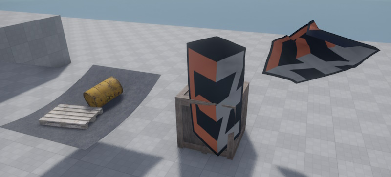

Jolt Cloth Sheet Component
The Jolt cloth sheet component simulates a square patch of cloth as it hangs and swings in the wind. It is meant for decorative purposes such as flags and curtains. Note that this interaction isn't very precise and prone to tunneling as well as getting tangled up inside dynamic objects.

Jolt cloth sheets are affected by wind and contrary to the cloth sheet component they also collide with other physics objects and scene geometry. However, the physics interactions are one-sided, meaning that the cloth is pushed by dynamic objects, but does not push them. Although this would be technically possible, it is deliberately disabled, to prevent undesirable physics simulation artifacts.
Component Properties
Size: The physical size of the cloth sheet in the world.Segments: How detailed to simulate the cloth.CollisionLayer: The collision layer to use.WindInfluence: How strongly wind should make the cloth swing.GravityFactor: How strongly gravity pulls on the cloth.Damping: How quickly the cloth loses energy while swinging. Higher values make it come to rest more quickly, low values make it swing for a longer time.Thickness: How thick the cloth shall be. The thicker it is, the less likely that it intersects with geometry such that the other geometry is visible through the cloth.Flags: These define at which corners and edges the sheet of cloth is attached to the world.Material: The material used for rendering the cloth. Make sure to set it to two-sided for cloth that can be seen from both sides.TextureScale: Scale for the texture UV coordinates.Color: An additional tint-color for rendering.